Troubleshooting chart
1. No Display

|
When adjusting or servicing the PCB with the power switch
ON, securely connect the shield part of the CRT Iintegral implosion
protection band) to the GND on the PCB (Secondary Radiator) with
leadd before turning the Power switch ON.
Otherwise, if the high voltage put into the CRT, it will cause
unstability of the external earth. This will result in serious
electric shocl or damage. |
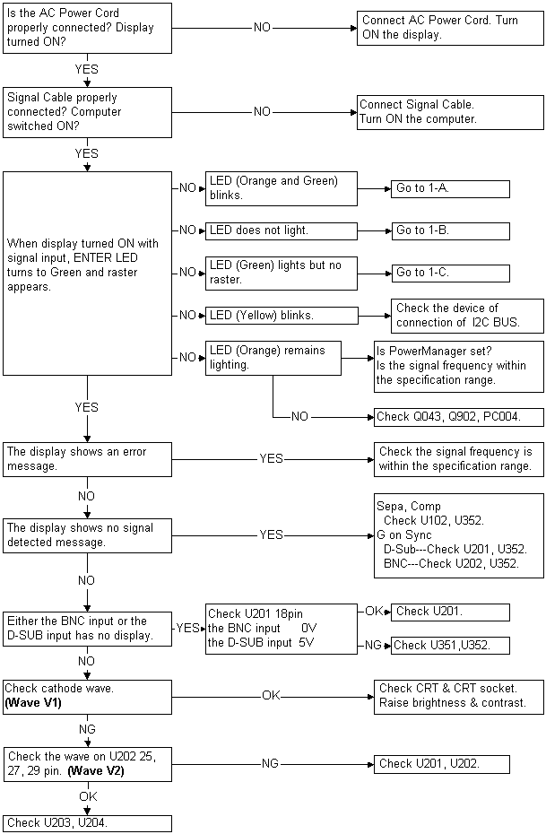
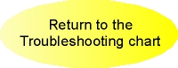
1-A. LED (Yellow) Blinks (Protector of microprocessor operates)
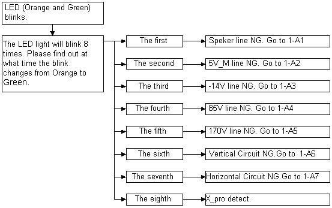
*When there are two or more factors, it becomes the above-mentioned
composite.
|
When canceling the protector, short 1 pin and 2 pin of CN354
on PCB-VIDEO. (When protector functions are canceled, yellow
horizontal lines appear on the OSD display.) And then, short
between U951 1pin and GND in order to stop the horizontal output
circuit and high voltage circuit . After servicing, restore CN354
1, 2 pin and U951 1pin. |
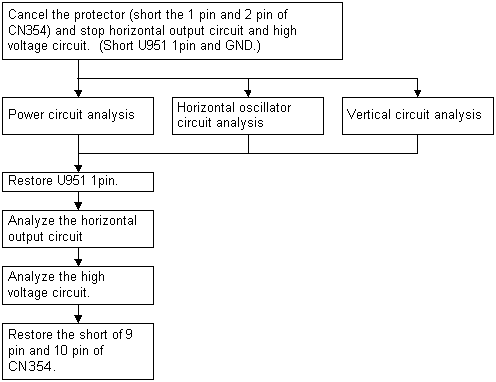
1-A1 Speaker Power NG (Analyze with stopping horizontal output
circuit and high voltage circuit)
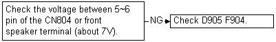
1-A2 5V_M NG (Analyze with stopping horizontal output circuit
and high voltage circuit)
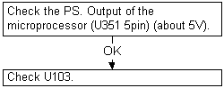
1-A3 -14V NG (Analyze with stopping horizontal output circuit
and high voltage circuit)
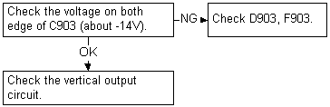
1-A4 85V NG (Analyze with stopping horizontal output circuit
and high voltage circuit)
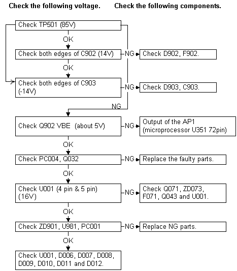
1-A5 180V NG
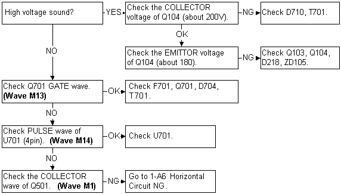
1-A6 Horizonta Circuit NG
|
*After the servicing, resotre U951 1pin . |
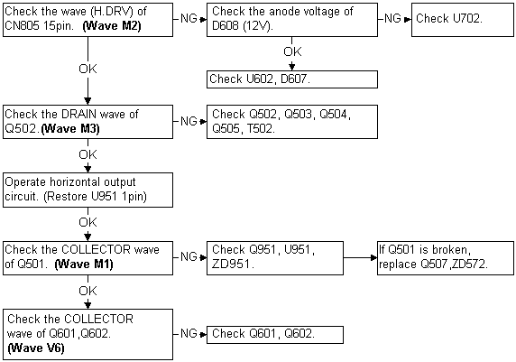
1-A7 Vertical Circuit NG
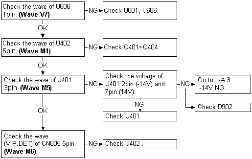
1-B. No display (LED does not light)
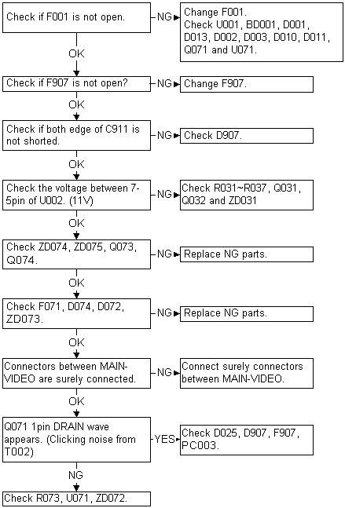
1-C. No display (LED lights but no raster)

|
When checking wave on the primary voltage line, use
the 2pin power plug of oscilloscope. Do not connect GND on the
primary circuit and GND on the secondary circuit (chassis).
If not, this may cause electric shock, damage to the circuit
or breaker-down. |

2. Horizontal Size is not corret
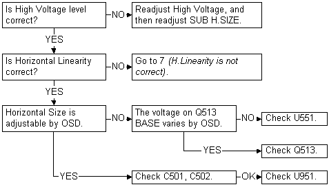
3. Vertical Size is not correct
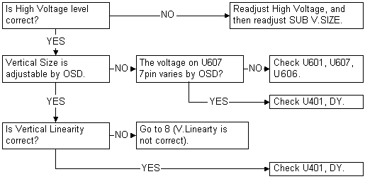
4. Horizontal/Vertical Sync is not correct
4-1 Sync is not correct in SYNC ON GREEN input
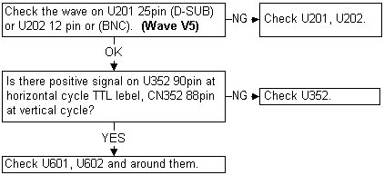
4-2 Vertical Sync is not correct in Separate Syn input
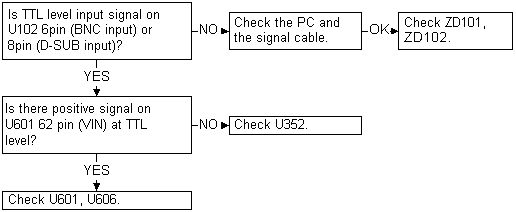
4-3 Horizontal Sync is not correct in Separate Sync input
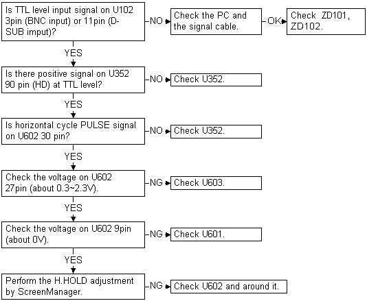
5. Focus is not correct
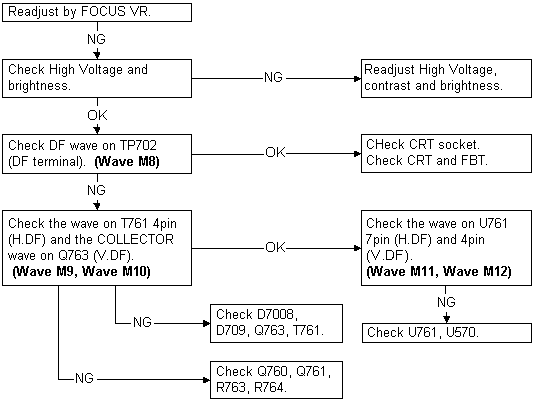
6. Convergence / Purity is not correct
6-1 Convergence
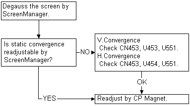
6-2 Purity
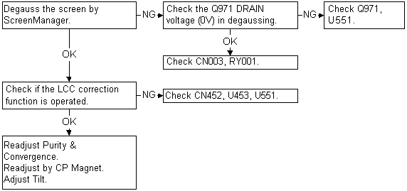
7. Horizontal Linearity is not correct
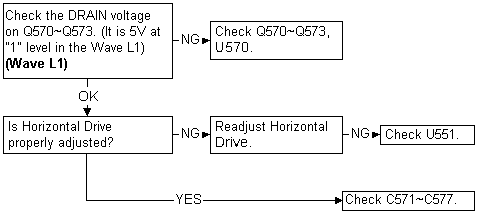
8. Vertical Liniarity is not correct
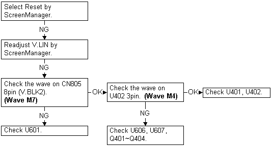
9. White Balance is not correct
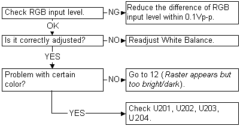
10. Distortion is not correct
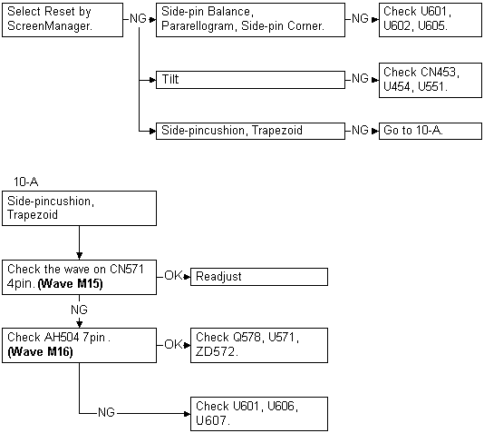
11. Horizontal noise appears
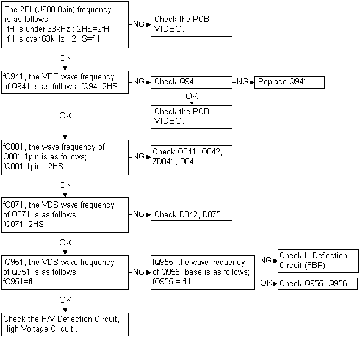
12. Raster appears but too bright or too dark

|
Do not check wave on the primary and secondary voltage line
with same oscilloscope at same time. If necessary, connect the
Isolation Trans for the power of monitor.
This may cause an Electric shock or damage to the circuit. |
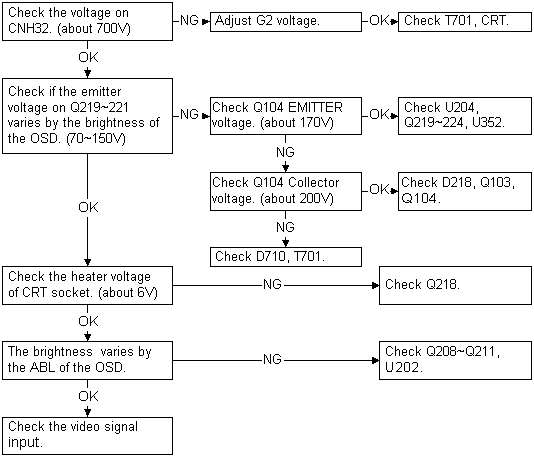
13. Image problem (Overshoot, smear)
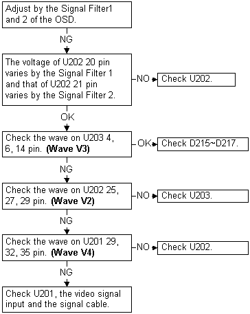
14. PowerManager does not work.
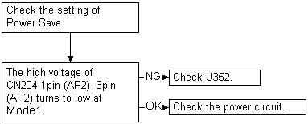
15. AutoSizing function does not work
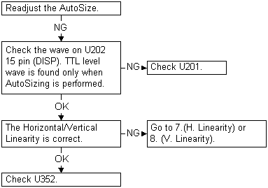
16. Adjustment button does not work
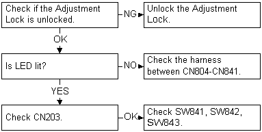
17. Input Priority function does not work
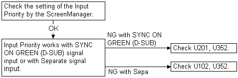
18. USB function does not work

|
Check the PCB-USB without connection the device to the Up
Stream. |
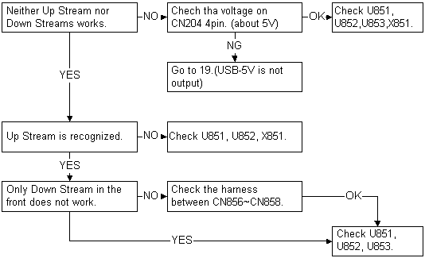
19. USB-5V is not output
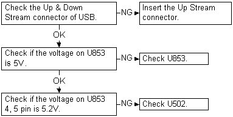
|